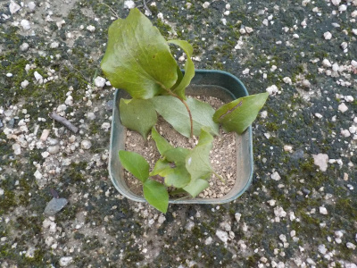
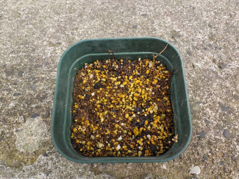
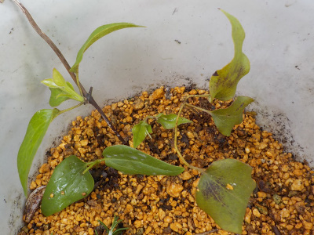
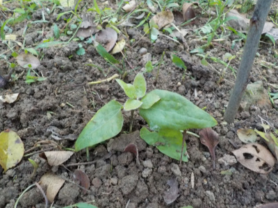
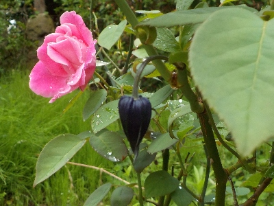

更新日: 2023/07/09

本やネット情報だと、すらっと伸びたツルを3節取って挿しましょうってあるんですが、3節伸びてるツルがあまりなかったです。
しょうがないので、短い2節のツルを使って挿し芽しました。
更新日: 2023/08/27

跡形もないです。

再び挑戦しますが、今までと同じ方法なのでたぶんダメかな。
更新日: 2023/10/08

挿し芽のクレマチスに根っこが生えたので、バラの木の下に植えました。
クレマチスの地植えは初めてです。
更新日: 2024/06/28

クレマチスの挿し芽はカザグルマが成功していて、ロウグチが失敗したと思っていましたが、ロウグチが成功していました。
そしてロウグチの花がありました。
地植えで勢いよく成長しているので、これから長く花が楽しめそうです。